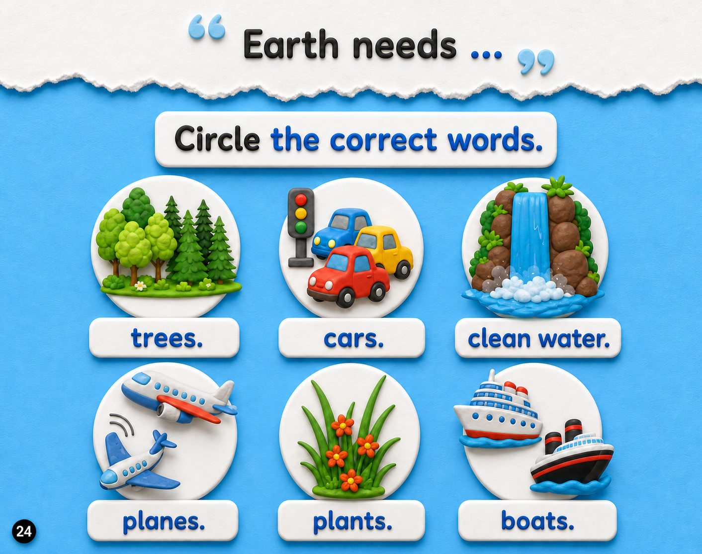

⬅️ Previous Page
📖 Page 5 of 6
Next Page ➡️
🏠 Week 3 Home
Week 3 — Why do we need bees?
🎵 Week Song
🃏 Flashcards

🔊
🔊
🔊
🔊
🔊
🔊
▶ Start Activity
Great choices! 🌍
Earth needs trees, clean water, and plants.
↻ Try Again
Next Page ➡️
Press Start Activity to begin.
↻ Try Again